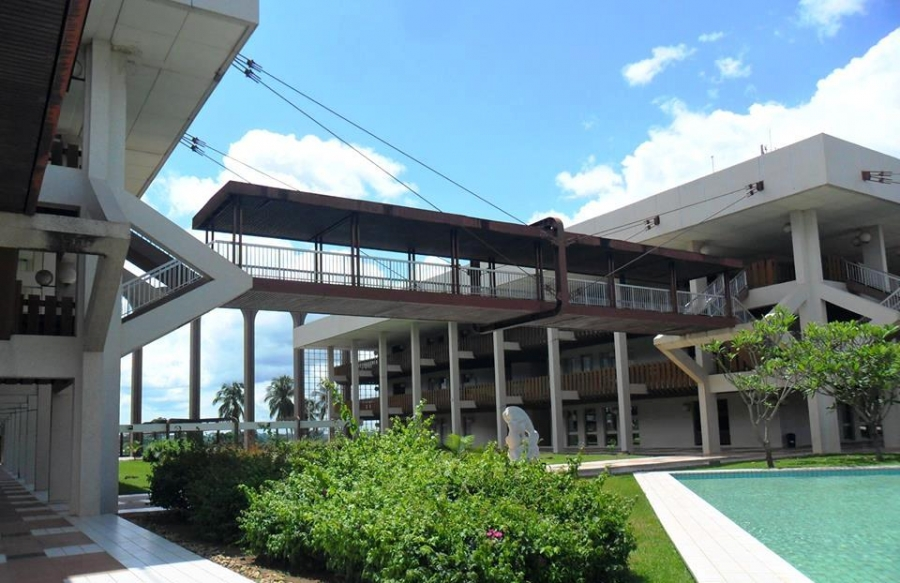

La fin du premier semestre universitaire : faire le point et préparer l'avenir

La fin du premier semestre marque une étape cruciale dans la vie des étudiants. C'est un moment où ils ont l'occasion de réfléchir sur leur parcours académique, d'évaluer leurs réalisations et de se préparer aux défis qui les attendent dans la suite de leur cursus. Dans cet article, nous allons explorer l'importance de la fin du premier semestre, examiner les différentes activités et mesures prises par les étudiants, et discuter des perspectives qui s'ouvrent à eux pour le reste de l'année en prépa.
Faire le point sur les réalisations et les défis :
La fin du premier semestre est l'occasion pour les étudiants de faire le bilan de leurs réalisations et des défis auxquels ils ont été confrontés au cours des derniers mois. C'est le moment de réfléchir sur les cours suivis, les projets réalisés, les dévoirs passés, et d'évaluer leur niveau de performance. Cette réflexion permet aux étudiants de prendre conscience de leurs forces et de leurs faiblesses, de célébrer leurs succès et de travailler sur les aspects qu'ils souhaitent améliorer.
Préparation pour la suite du parcours académique :
La fin du premier semestre est également le moment idéal pour les étudiants de se préparer pour la suite de leur parcours académique. Cela peut impliquer la planification des cours à suivre, la sélection des options de spécialisation, ou même l'élaboration d'un plan d'études pour les prochaines années. Les étudiants peuvent également profiter de cette période pour chercher des opportunités de stage, de recherche ou d'échange universitaire, qui enrichiront leur expérience et les aideront à développer leurs compétences.
Amélioration des stratégies d'apprentissage :
La fin du premier semestre offre aux étudiants la possibilité de réfléchir sur leurs stratégies d'apprentissage et d'identifier celles qui ont fonctionné et celles qui peuvent être améliorées. Ils peuvent évaluer leurs méthodes de prise de notes, d'organisation du temps, de préparation aux examens, et apporter les ajustements nécessaires pour optimiser leur efficacité académique. Cette période de réflexion et de réajustement est essentielle pour maximiser les résultats académiques et atteindre les objectifs fixés.
Recharge et relaxation :
La fin du premier semestre marque également une pause bien méritée pour les étudiants. Après des mois d'efforts intenses, ils ont l'occasion de se détendre, de recharger leurs batteries et de prendre du temps pour eux-mêmes. Il est important de trouver un équilibre entre le travail académique et les moments de détente afin de maintenir une bonne santé mentale et physique. Les étudiants peuvent profiter de cette période pour s'adonner à des activités qu'ils aiment, passer du temps avec leurs proches ou simplement se reposer et se ressourcer.
Perspectives pour le reste de l'année universitaire :
Enfin, la fin du premier semestre ouvre de nombreuses perspectives pour le reste de l'année en classe préparatoire. Les étudiants peuvent se fixer de nouveaux objectifs académiques, s'
engager dans des projets passionnants, rejoindre des clubs ou des associations étudiantes, ou même envisager des opportunités de leadership. C'est le moment idéal pour explorer de nouvelles possibilités, élargir ses horizons et saisir toutes les opportunités offertes par l'université.
Conclusion :
La fin du premier semestre universitaire est un moment crucial pour les étudiants. C'est l'occasion de faire le point sur leurs réalisations et les défis rencontrés, de planifier la suite de leur parcours académique et de se préparer aux opportunités à venir. Que ce soit en améliorant leurs stratégies d'apprentissage, en prenant du temps pour se reposer et se ressourcer, ou en se fixant de nouveaux objectifs, les étudiants peuvent utiliser cette période pour grandir, se développer et atteindre l'excellence dans leur vie universitaire.